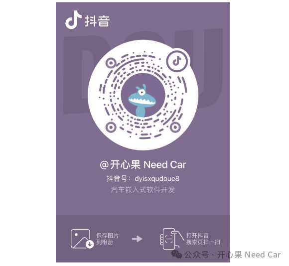

返回本专题目录"好久不见，技术碰碰面"第一期
开心果 Need Car · 2024-06-14T07:03:00+08:00 · 微信原文
一直以来，"开心果 Need Car"以文字的形式，和大家"交流"。写公众号的这段日子里，分享了很多，也收获了很多...期间，也有读者寻求学习指导，问题帮助，择业意见...
我不擅长给出意见，因为，承担结果的，永远是做决定的"你"。虽然不能给什么意见，但是，不妨我们聊聊，侃侃。所以，本周（2024/6/15 19：00~20:00），打算和大家以直播的形式"见面"，聊聊行业现状，聊聊工程技术，聊聊你遇到的问题...为了直播，最近研究了一下"抖音"，目前决定，用这个App平台和大家"见面"，终于能像“同事”一样，"坐"在大家旁边。也期待同频的我们，能在技术话题上产生共鸣。这次直播，咱们不设特定主题，如果大家有问题，可以提前准备关注的问题，可以给我私信或者留言，针对大家的问题，可以聚焦性的细聊。
个人抖音号：dyisxqudoue8，关注一下，咱们不见不散。
